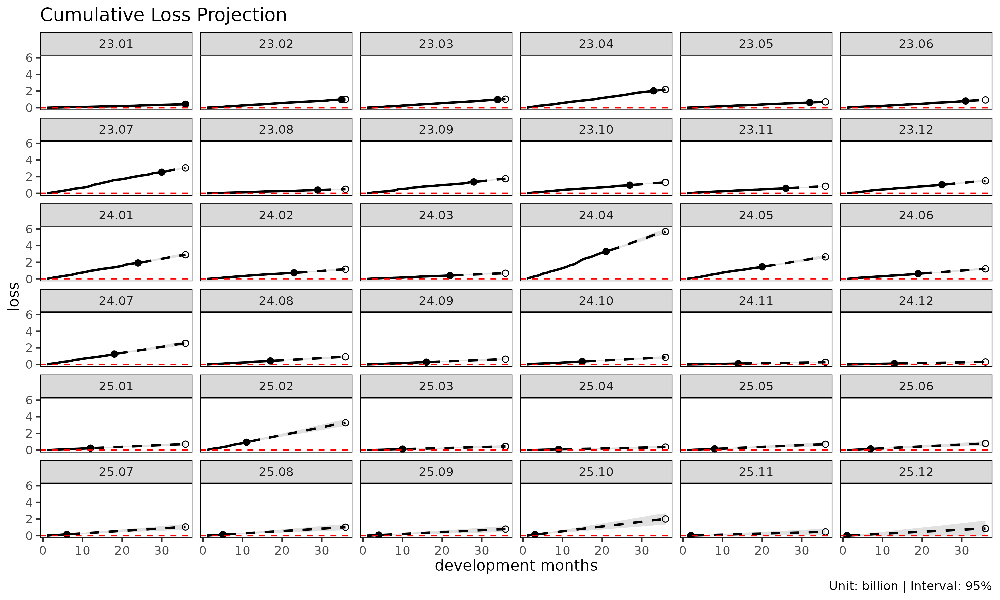
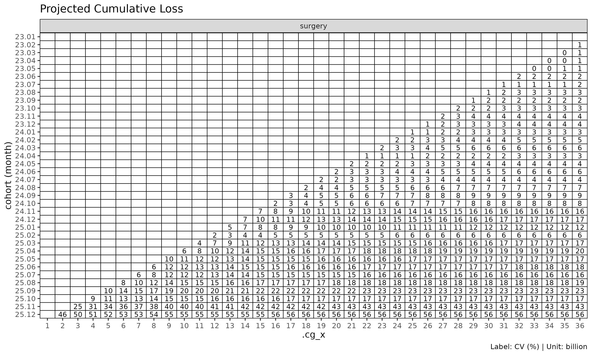

영어 원본 보기: Projection methods
이 문서는 lossratio 의 다섯 가지 예측 방법 — 노출 기반(exposure-driven, ED), 체인 래더(chain ladder, CL), 단계 적응형(stage-adaptive, SA), Bornhuetter-Ferguson(BF), Cape Cod(CC) — 을 깊이 있게 다룬다. 빠른 시작 튜토리얼이 각 적합 함수를 어떻게 호출하는지 보여 준다면, 본 문서는 각 방법이 왜 존재하며 어떤 가정 위에 서 있고 언제 한 방법이 다른 방법보다 나은지를 설명한다. 대상 독자는 장기 건강보험 손해율을 다루는 실무자다.
1. 왜 전용 예측 도구가 필요한가
장기건강보험 손해율은 매일 다루는 task 다 — 코호트별 손해율 패턴 분석, 미래 손해율 ult 예측, 실적이 예상과 얼마나 일치하는지 모니터링. 그러나 기존 reserving 도구의 방법론적 기반은 대부분 손해보험(P&C) 영역에서 발전했고, 장기건강보험의 다음과 같은 고유 특성은 직접 반영되지 않는다.
- 분모효과(denominator effect)와 관성(inertia) — 누적 손해율 자체가 경과 기간이 누적될수록 분모가 자동으로 자라면서 신호가 감쇠된다.
- 다회성 보험금 — 입원·수술·통원 등은 한 피보험자가 여러 차례 보험금을 받는다. 한 코호트의 ultimate frequency 가 1 을 초과할 수 있다.
- 위험보험료 분리 — 한국의 장기보험료는 위험보험료 + 저축보험료 + 부가보험료의 합이다. 손해율의 진짜 분모는 위험보험료만이다.
- 평탄화 보험료 — 비갱신형 상품은 가입 시 평균값으로 산출된 level premium 을 전 기간 동일 부과한다. 따라서 charged premium 자체는 premium 가 아니다. 실제 period risk premium 은 위험률(t) x 가입금액 x 유지율(t) 로 외부 산출 후 입력해야 한다.
- 체제 변화(regime change) — 약관 개정·요율 조정·채널 mix 변화·인수 기준 변경 등이 코호트 단위로 손해율 양상을 바꾼다.
lossratio 는 P&C 영역에서 발전한 reserving 방법론 — Mack 1993 chain ladder, Bornhuetter-Ferguson 1972, Cape Cod (Stanard 1985), Bühlmann-Straub 1970 credibility, Sherman 1984 의 tail 외삽 — 을 위 도메인 issue 에 맞춰 재구성한 framework 다. 학술적 lineage 를 존중하되, 장기건강보험 실무에서 바로 쓸 수 있는 도구가 목적이다.
2. 방법론의 lineage
장기 손해율 추정의 방법론적 뿌리는 다음의 P&C reserving 흐름이다.
1967 Bühlmann credibility -- experience rating 의 수학적 형식화
1970 Bühlmann-Straub -- premium-varying credibility
(volume-weighted estimator)
1972 Bornhuetter-Ferguson -- prior + observed loss 결합
1984 Sherman -- chain ladder tail factor 외삽
1985 Stanard (Cape Cod) -- Bühlmann-Straub 의 reserving 응용
1993 Mack -- chain ladder 의 distribution-free MSE이후 모든 내용을 끌고 가는 핵심 idea 두 가지:
- Chain ladder (Mack 1993) — 누적 손해 의 Markov 곱셈 recursion: where .
- Cape Cod / Bühlmann-Straub — 손해를 premium(= volume)으로 anchoring. 의 single ratio 로 ult 산출.
장기건강보험에 적용 시 둘 다 부분적으로 작동하지만, 모두 cracks 가 있다.
| 도메인 issue | Chain ladder | Cape Cod |
|---|---|---|
| 분모효과 / 관성 | 초기 dev 의 가 과대 변동 ( 작아서) | ELR 의 cohort 별 변동 무시 |
| 평탄화 보험료 | 손해만 사용해 우회 가능 (발생률 변화엔 약함) | 가 flat 이면 진짜 premium 의 dev 변화 흡수 |
| 다회성 보험금 | 사용 가능 (frequency x severity 무관) | 사용 가능 (volume measure 만 필요) |
| 발전하는 위험보험료 | 무관 | single 가정 — triangle 형태 premium 미지원 |
| 코호트 단위 체제 변화 | Mack 가정 (no calendar-year effect) 위반 | cohort heterogeneity 무시 |
chain ladder 는 초기 dev 에 약하고, Cape Cod 는 premium 의 발전 양상을 처리하지 못한다. 둘 다 각자 한 paradigm 의 한계를 갖는다 — 패키지가 하나가 아니라 다섯 가지 방법을 제공하는 이유가 바로 이것이다.
3. 핵심 framework: loss / premium / ratio
lossratio 의 모든 추정은 다음 세 양 위에서 이루어진다.
| 양 | 의미 | 컬럼 이름 (Triangle) |
|---|---|---|
| loss | 발생 손해의 누적량 |
loss, incr_loss
|
| premium | 위험보험료 (장기 health 는 누적 위험보험료) |
premium, incr_premium
|
| ratio | 손해율 (cumulative loss / cumulative premium) |
ratio, incr_ratio
|
세 양 모두 cohort x dev grid 위에서 발전하는 관측치(stochastic observable)다. premium 는 고정된 underwriting volume 이 아니라 위험률 x 가입금액 x 유지율의 dev 따라 변동하는 양이다 — Mack 1993 의 volume measure, Bühlmann-Straub 1970 의 natural weight 와 같은 의미다.
코호트 , dev 에 대하여 예측 방법들이 쓰는 표기는 다음과 같다.
- — 누적 손해액
- — 누적 위험보험료
- — ATA 인자(age-to-age factor)
- — 노출 기반(exposure-driven, ED) 강도
- 성숙점(maturity point) — 그룹에서 가 안정화되는 dev (CV / RSE 임계값으로 탐지)
이하 모든 예시는 간결성을 위해 surgery 그룹만 사용한다 —
모든 절차는 다중 그룹 입력에도 그대로 일반화된다.
library(lossratio)
data(experience)
tri <- as_triangle(
experience[coverage == "surgery"],
groups = "coverage",
cohort = "uy_m",
calendar = "cy_m",
loss = "incr_loss",
premium = "incr_premium"
)4. 직접 추정: ED, CL, SA
직접 추정 세 method 는 데이터로부터 인자를 추정해 전방으로 연결한다.
순서 ed -> cl -> sa 가
방법론적 진화를 그대로 표현한다 — primitive(ED) -> classical(CL)
-> composition(SA).
| Method | 점추정 식 | 분산 helper | 도메인 특성 |
|---|---|---|---|
"ed" (default) |
(additive) |
.ed_g_var (B-S 1970) |
초기 dev 의 ATA 변동성에 robust |
"cl" |
(multiplicative) |
.mack_f_var (Mack 1993) |
후기 dev factor 안정화 후 자연 |
"sa" |
성숙점 이전 ED, 이후 CL | 두 helper 의 합성 | ED 와 CL 의 stage-adaptive 합성 |
4.1 노출 기반 ("ed", default)
ED 는 모든 미래 증분을 premium(위험보험료)을 분모로 하여 예측한다.
ED 가 기본값인 이유는 unconditional safe baseline 이기 때문이다 — 성숙점이나 regime 검출에 의존하지 않으며, 초기 dev 의 ATA 인자 변동에도 강건하다. 초기 dev 의 작은 가 분모에 들어가지 않으므로, 초기 가 일으키는 추정량 과대 변동에 영향받지 않는다.
대가는 코호트 동질성 가정이다. pooled intensity
는 코호트들이 단위 보험료당 손해 수준에서 대체로 동질적이라 가정한다.
코호트-레벨 drift 가 있으면 추정이 pooled 평균으로 편향되어 post-change
코호트를 over-project 할 수 있다 — 명시적 필터는 regime
인자다.
언제 사용: 코호트 동질성이 그럴듯한 baseline 으로; chain ladder 가 이점이 없는 short-tail 상품; ATA 인자가 전 link 에서 신뢰할 수 없는 sparse 데이터.

summary(ratio_ed)
#> coverage cohort latest loss_ult reserve premium_ult
#> <char> <Date> <num> <num> <num> <num>
#> 1: surgery 2023-01-01 410248522 410248522 0 274192564
#> 2: surgery 2023-02-01 976330445 1001304261 24973816 665667720
#> 3: surgery 2023-03-01 978486045 1027365215 48879170 702047332
#> 4: surgery 2023-04-01 2029909919 2186835972 156926053 1464399410
#> 5: surgery 2023-05-01 624219436 700124202 75904766 483147255
#> 6: surgery 2023-06-01 802880717 924502357 121621640 591568799
#> 7: surgery 2023-07-01 2539141549 3028986426 489844877 1958263736
#> 8: surgery 2023-08-01 393678329 488454953 94776624 327535560
#> 9: surgery 2023-09-01 1364052542 1725804921 361752379 1091733892
#> 10: surgery 2023-10-01 979266043 1308019740 328753697 864204933
#> 11: surgery 2023-11-01 604685679 876716310 272030631 630311110
#> 12: surgery 2023-12-01 1026345366 1527010394 500665028 1057060867
#> 13: surgery 2024-01-01 1912177598 2942802614 1030625016 2009045340
#> 14: surgery 2024-02-01 733902485 1193629493 459727008 832229795
#> 15: surgery 2024-03-01 415459873 685046660 269586787 454345985
#> 16: surgery 2024-04-01 3286053526 5424401591 2138348065 3372494516
#> 17: surgery 2024-05-01 1451731153 2740753232 1289022079 1899849125
#> 18: surgery 2024-06-01 629668308 1170293302 540624994 750125230
#> 19: surgery 2024-07-01 1250954693 3461664518 2210709825 2891548085
#> 20: surgery 2024-08-01 425346694 1212435170 787088476 976935246
#> 21: surgery 2024-09-01 278156543 870725770 592569227 703906575
#> 22: surgery 2024-10-01 352070323 1217843289 865772966 984833529
#> 23: surgery 2024-11-01 99050501 398006955 298956454 324081360
#> 24: surgery 2024-12-01 103194013 456590846 353396833 366444614
#> 25: surgery 2025-01-01 227089025 1064623873 837534848 833732378
#> 26: surgery 2025-02-01 939163074 4386331021 3447167947 3286151352
#> 27: surgery 2025-03-01 112828845 727050149 614221304 566316398
#> 28: surgery 2025-04-01 82472453 616924302 534451849 476819833
#> 29: surgery 2025-05-01 141214851 1330756277 1189541426 1027051048
#> 30: surgery 2025-06-01 136406102 1072907077 936500975 783037474
#> 31: surgery 2025-07-01 149144024 1209357471 1060213447 859730812
#> 32: surgery 2025-08-01 116327076 1432029264 1315702188 1037192185
#> 33: surgery 2025-09-01 67465470 865239645 797774175 611257142
#> 34: surgery 2025-10-01 121626173 1911124852 1789498679 1338462726
#> 35: surgery 2025-11-01 15716444 828091909 812375465 593147593
#> 36: surgery 2025-12-01 4825085 1442904476 1438079391 1022559927
#> coverage cohort latest loss_ult reserve premium_ult
#> <char> <Date> <num> <num> <num> <num>
#> ratio_latest ratio_ult maturity_from loss_proc_se loss_param_se
#> <num> <num> <num> <num> <num>
#> 1: 1.4962059 1.496206 NA 0 0
#> 2: 1.5107824 1.504210 NA 2934231 4309793
#> 3: 1.4771448 1.463385 NA 3982661 5158162
#> 4: 1.5139132 1.493333 NA 6546789 11609585
#> 5: 1.4543748 1.449091 NA 4547580 3813039
#> 6: 1.5796369 1.562798 NA 17628088 8903464
#> 7: 1.5597190 1.546771 NA 35686361 31442590
#> 8: 1.4945957 1.491304 NA 16152143 5121110
#> 9: 1.6079808 1.580793 NA 37357117 20421919
#> 10: 1.5129472 1.513553 NA 37573001 17215247
#> 11: 1.3298743 1.390926 NA 35161608 12015326
#> 12: 1.3981081 1.444581 NA 53162531 22167720
#> 13: 1.4274951 1.464777 NA 76259904 44384184
#> 14: 1.3793745 1.434255 NA 51529679 18632983
#> 15: 1.4969280 1.507764 NA 41482939 11326747
#> 16: 1.6712898 1.608424 NA 120195326 95592928
#> 17: 1.3770835 1.442616 NA 88447102 46270702
#> 18: 1.5918247 1.560131 NA 66834389 21472291
#> 19: 0.8658750 1.197167 NA 104028932 46251465
#> 20: 0.9236050 1.241060 NA 62896850 16977280
#> 21: 0.8920448 1.236991 NA 56583751 11941938
#> 22: 0.8596968 1.236598 NA 71133708 16328611
#> 23: 0.7871749 1.228108 NA 41388948 5266012
#> 24: 0.7813438 1.246002 NA 48660596 6215769
#> 25: 0.8188282 1.276937 NA 82549103 15683804
#> 26: 0.9377837 1.334793 NA 193613125 74852479
#> 27: 0.7193486 1.283823 NA 71295313 10069046
#> 28: 0.6947510 1.293831 NA 68826316 8438639
#> 29: 0.6203897 1.295706 NA 116537796 18989499
#> 30: 0.8981587 1.370186 NA 137078933 22543675
#> 31: 1.0440457 1.406670 NA 166193829 31402939
#> 32: 0.8100543 1.380679 NA 184425493 33103273
#> 33: 0.9985960 1.415508 NA 180452022 27168526
#> 34: 1.0894657 1.427851 NA 331672128 79057462
#> 35: 0.4765917 1.396098 NA 190733674 20867271
#> 36: 0.1689836 1.411071 NA 464027946 65288155
#> ratio_latest ratio_ult maturity_from loss_proc_se loss_param_se
#> <num> <num> <num> <num> <num>
#> loss_total_se loss_total_cv ratio_se ratio_cv ratio_ci_lo ratio_ci_hi
#> <num> <num> <num> <num> <num> <num>
#> 1: 0 0.000000000 0.000000000 0.000000000 1.4962059 1.496206
#> 2: 5213830 0.005207039 0.007832482 0.005207039 1.4888589 1.519562
#> 3: 6516765 0.006343182 0.009282515 0.006343182 1.4451911 1.481578
#> 4: 13328275 0.006094776 0.009101530 0.006094776 1.4754943 1.511172
#> 5: 5934623 0.008476529 0.012283260 0.008476529 1.4250160 1.473165
#> 6: 19748953 0.021361712 0.033384034 0.021361712 1.4973662 1.628229
#> 7: 47562095 0.015702314 0.024287890 0.015702314 1.4991681 1.594375
#> 8: 16944542 0.034690081 0.051733442 0.034690081 1.3899079 1.592699
#> 9: 42574746 0.024669501 0.038997366 0.024669501 1.5043592 1.657226
#> 10: 41329107 0.031596700 0.047823272 0.031596700 1.4198208 1.607285
#> 11: 37157863 0.042382995 0.058951622 0.042382995 1.2753833 1.506469
#> 12: 57599154 0.037720211 0.054489912 0.037720211 1.3377831 1.551380
#> 13: 88235644 0.029983541 0.043919190 0.029983541 1.3786966 1.550857
#> 14: 54795036 0.045906235 0.065841233 0.045906235 1.3052083 1.563301
#> 15: 43001505 0.062771643 0.094644843 0.062771643 1.3222638 1.693265
#> 16: 153573839 0.028311665 0.045537165 0.028311665 1.5191729 1.697675
#> 17: 99819176 0.036420344 0.052540580 0.036420344 1.3396386 1.545594
#> 18: 70198966 0.059984079 0.093582996 0.059984079 1.3767113 1.743550
#> 19: 113847340 0.032888034 0.039372453 0.032888034 1.1199979 1.274335
#> 20: 65147845 0.053733055 0.066685940 0.053733055 1.1103579 1.371762
#> 21: 57830189 0.066416077 0.082156058 0.066416077 1.0759676 1.398013
#> 22: 72983751 0.059928689 0.074107704 0.059928689 1.0913497 1.381847
#> 23: 41722607 0.104828839 0.128741150 0.104828839 0.9757801 1.480436
#> 24: 49055982 0.107439697 0.133870114 0.107439697 0.9836217 1.508383
#> 25: 84025806 0.078925344 0.100782707 0.078925344 1.0794067 1.474468
#> 26: 207578746 0.047324004 0.063167737 0.047324004 1.2109863 1.458599
#> 27: 72002829 0.099034199 0.127142405 0.099034199 1.0346287 1.533018
#> 28: 69341707 0.112399053 0.145425384 0.112399053 1.0088025 1.578860
#> 29: 118074803 0.088727594 0.114964882 0.088727594 1.0703790 1.521033
#> 30: 138920305 0.129480276 0.177412077 0.129480276 1.0224648 1.717907
#> 31: 169134660 0.139854976 0.196729788 0.139854976 1.0210866 1.792253
#> 32: 187372862 0.130844297 0.180653947 0.130844297 1.0266036 1.734754
#> 33: 182485783 0.210907792 0.298541761 0.210907792 0.8303773 2.000640
#> 34: 340964049 0.178410138 0.254743029 0.178410138 0.9285635 1.927138
#> 35: 191871774 0.231703476 0.323480658 0.231703476 0.7620871 2.030108
#> 36: 468598419 0.324760527 0.458260104 0.324760527 0.5128975 2.309244
#> loss_total_se loss_total_cv ratio_se ratio_cv ratio_ci_lo ratio_ci_hi
#> <num> <num> <num> <num> <num> <num>4.2 체인 래더 ("cl")
CL 은 고전적 Mack (1993) 모형이다.
코호트 자기 누적 손해가 anchor 역할을 하므로 코호트-레벨 drift 가 명시적 regime 검출 없이 자연스럽게 propagation 된다. 대가는 ED 의 거울상이다 — 초기 에 노이즈가 있을 때 변동성이 크다. 작은 분모가 link 오차를 증폭하기 때문이다.
fit_ratio() 안에서 CL method 는 손해와 보험료를 모두 —
각자 자기 컬럼에 대한 chain ladder 로 — 전방 추정하고 delta method 로
손해율 불확실성을 계산한다. 손해 lane 단독은 fit_cl(tri) 과
동등하다.
언제 사용: ATA 인자가 안정된 후; 코호트의 관측 경로가 추정의 anchor 가 되어야 하는 코호트-레벨 drift 시나리오; 규제 당국이 문서화 목적으로 고전적 Mack 형식을 요구하는 적립 작업.

4.3 단계 적응형 ("sa")
SA 는 성숙점 이전을 ED 로, 이후를 CL 로 합성한다. 가 초반에는 변동성이 크고 후반에는 안정적이며, 는 그 반대로 움직인다는 사실을 활용한다.
- 성숙점 이전 SA 는 손해 추정치를 보험료 volume 에 anchor 하여, 초기 가 노이즈로 폭주하는 고전 CL 의 문제를 회피한다.
- 성숙점 이후 SA 는 코호트 자체의 관측 수준을 보존하여, 순수 ED 가 꼬리에서 모든 코호트를 평균으로 끌어당기는 문제를 회피한다.
언제 사용: 초기 dev 의 변동성(ED phase)과 후기 dev 의 코호트-레벨 drift(CL phase)를 둘 다 처리해야 하는 장기-tail 포트폴리오; 최근 코호트(미성숙 데이터)와 오래된 코호트(성숙 데이터)가 혼재하는 경우; 성숙점 이전·이후의 구조적 차이가 있는 건강보험 코호트(예: 면책기간 전환).

summary(ratio_sa)
#> coverage cohort latest loss_ult reserve premium_ult
#> <char> <Date> <num> <num> <num> <num>
#> 1: surgery 2023-01-01 410248522 410248522 0 274192564
#> 2: surgery 2023-02-01 976330445 1001441303 25110858 665667720
#> 3: surgery 2023-03-01 978486045 1026151243 47665198 702047332
#> 4: surgery 2023-04-01 2029909919 2186771221 156861302 1464399410
#> 5: surgery 2023-05-01 624219436 697669301 73449865 483147255
#> 6: surgery 2023-06-01 802880717 931393934 128513217 591568799
#> 7: surgery 2023-07-01 2539141549 3050990158 511848609 1958263736
#> 8: surgery 2023-08-01 393678329 488218204 94539875 327535560
#> 9: surgery 2023-09-01 1364052542 1751869308 387816766 1091733892
#> 10: surgery 2023-10-01 979266043 1311793843 332527800 864204933
#> 11: surgery 2023-11-01 604685679 848103123 243417444 630311110
#> 12: surgery 2023-12-01 1026345366 1497869029 471523663 1057060867
#> 13: surgery 2024-01-01 1912177598 2901492851 989315253 2009045340
#> 14: surgery 2024-02-01 733902485 1160045952 426143467 832229795
#> 15: surgery 2024-03-01 415459873 686574148 271114275 454345985
#> 16: surgery 2024-04-01 3286053526 5687484014 2401430488 3372494516
#> 17: surgery 2024-05-01 1451731153 2645801838 1194070685 1899849125
#> 18: surgery 2024-06-01 629668308 1209024555 579356247 750125230
#> 19: surgery 2024-07-01 1250954693 2542927190 1291972497 2891548085
#> 20: surgery 2024-08-01 425346694 918120582 492773888 976935246
#> 21: surgery 2024-09-01 278156543 635470028 357313485 703906575
#> 22: surgery 2024-10-01 352070323 856446521 504376198 984833529
#> 23: surgery 2024-11-01 99050501 260916096 161865595 324081360
#> 24: surgery 2024-12-01 103194013 295637296 192443283 366444614
#> 25: surgery 2025-01-01 227089025 710560093 483471068 833732378
#> 26: surgery 2025-02-01 939163074 3276849152 2337686078 3286151352
#> 27: surgery 2025-03-01 112828845 434950057 322121212 566316398
#> 28: surgery 2025-04-01 82472453 356301148 273828695 476819833
#> 29: surgery 2025-05-01 141214851 697290587 556075736 1027051048
#> 30: surgery 2025-06-01 136406102 789468799 653062697 783037474
#> 31: surgery 2025-07-01 149144024 1040451732 891307708 859730812
#> 32: surgery 2025-08-01 116327076 1008356733 892029657 1037192185
#> 33: surgery 2025-09-01 67465470 783000257 715534787 611257142
#> 34: surgery 2025-10-01 121626173 2001214863 1879588690 1338462726
#> 35: surgery 2025-11-01 15716444 576954661 561238217 593147593
#> 36: surgery 2025-12-01 4825085 1246569307 1241744222 1022559927
#> coverage cohort latest loss_ult reserve premium_ult
#> <char> <Date> <num> <num> <num> <num>
#> ratio_latest ratio_ult maturity_from loss_proc_se loss_param_se
#> <num> <num> <num> <num> <num>
#> 1: 1.4962059 1.4962059 3 0 0
#> 2: 1.5107824 1.5044162 3 2838052 4263874
#> 3: 1.4771448 1.4616554 3 3880367 4840717
#> 4: 1.5139132 1.4932888 3 7135821 10972855
#> 5: 1.4543748 1.4440097 3 4646457 3580792
#> 6: 1.5796369 1.5744474 3 17348955 8670204
#> 7: 1.5597190 1.5580078 3 38013946 29987964
#> 8: 1.4945957 1.4905808 3 16303418 4959278
#> 9: 1.6079808 1.6046670 3 37742856 20054538
#> 10: 1.5129472 1.5179199 3 39387794 16559819
#> 11: 1.3298743 1.3455310 3 34650050 11722778
#> 12: 1.3981081 1.4170130 3 51946833 22082843
#> 13: 1.4274951 1.4442147 3 73730102 44277226
#> 14: 1.3793745 1.3939010 3 51235927 18527296
#> 15: 1.4969280 1.5111263 3 41831046 11113922
#> 16: 1.6712898 1.6864324 3 118856877 94000634
#> 17: 1.3770835 1.3926379 3 90510561 45996854
#> 18: 1.5918247 1.6117636 3 66688102 21223812
#> 19: 0.8658750 0.8794345 3 104142855 46376952
#> 20: 0.9236050 0.9397968 3 62641056 17014220
#> 21: 0.8920448 0.9027761 3 56889317 11861881
#> 22: 0.8596968 0.8696358 3 67281634 16371282
#> 23: 0.7871749 0.8050944 3 43610819 5306326
#> 24: 0.7813438 0.8067721 3 49362868 6380942
#> 25: 0.8188282 0.8522640 3 81647027 16077360
#> 26: 0.9377837 0.9971693 3 184888599 76955907
#> 27: 0.7193486 0.7680337 3 73183198 10391123
#> 28: 0.6947510 0.7472448 3 68965019 8663440
#> 29: 0.6203897 0.6789250 3 117297078 19478869
#> 30: 0.8981587 1.0082133 3 134689808 23300101
#> 31: 1.0440457 1.2102064 3 164702068 31947996
#> 32: 0.8100543 0.9721985 3 174053848 34060502
#> 33: 0.9985960 1.2809670 3 180505913 28824273
#> 34: 1.0894657 1.4951592 3 341752123 82043614
#> 35: 0.4765917 0.9727000 3 198381074 21884900
#> 36: 0.1689836 1.2190672 3 480416590 66092613
#> ratio_latest ratio_ult maturity_from loss_proc_se loss_param_se
#> <num> <num> <num> <num> <num>
#> loss_total_se loss_total_cv ratio_se ratio_cv ratio_ci_lo ratio_ci_hi
#> <num> <num> <num> <num> <num> <num>
#> 1: 0 0.000000000 0.000000000 0.000000000 1.4962059 1.4962059
#> 2: 5122027 0.005114655 0.007694570 0.005114655 1.4893351 1.5194973
#> 3: 6204014 0.006045906 0.008837031 0.006045906 1.4443351 1.4789756
#> 4: 13089060 0.005985564 0.008938176 0.005985564 1.4757703 1.5108073
#> 5: 5866144 0.008408201 0.012141523 0.008408201 1.4202127 1.4678066
#> 6: 19394810 0.020823424 0.032785384 0.020823424 1.5101892 1.6387055
#> 7: 48418365 0.015869722 0.024725150 0.015869722 1.5095474 1.6064682
#> 8: 17041006 0.034904487 0.052027956 0.034904487 1.3886078 1.5925537
#> 9: 42740001 0.024396798 0.039148735 0.024396798 1.5279369 1.6813971
#> 10: 42727344 0.032571691 0.049441217 0.032571691 1.4210169 1.6148229
#> 11: 36579359 0.043130792 0.058033816 0.043130792 1.2317868 1.4592752
#> 12: 56445774 0.037684052 0.053398793 0.037684052 1.3123533 1.5216727
#> 13: 86003492 0.029641118 0.042808139 0.029641118 1.3603123 1.5281171
#> 14: 54482850 0.046966114 0.065466113 0.046966114 1.2655898 1.5222122
#> 15: 43282278 0.063040938 0.095262817 0.063040938 1.3244146 1.6978379
#> 16: 151535726 0.026643719 0.044932831 0.026643719 1.5983657 1.7744991
#> 17: 101527692 0.038373128 0.053439871 0.038373128 1.2878976 1.4973781
#> 18: 69983949 0.057884638 0.093296354 0.057884638 1.4289061 1.7946211
#> 19: 114002439 0.044831185 0.039426091 0.044831185 0.8021608 0.9567082
#> 20: 64910597 0.070699425 0.066443091 0.070699425 0.8095707 1.0700228
#> 21: 58112809 0.091448544 0.082557560 0.091448544 0.7409662 1.0645859
#> 22: 69244762 0.080851239 0.070311134 0.080851239 0.7318285 1.0074431
#> 23: 43932455 0.168377712 0.135559957 0.168377712 0.5394018 1.0707871
#> 24: 49773579 0.168360283 0.135828381 0.168360283 0.5405534 1.0729908
#> 25: 83214894 0.117111691 0.099810079 0.117111691 0.6566398 1.0478882
#> 26: 200264839 0.061115062 0.060942062 0.061115062 0.8777250 1.1166135
#> 27: 73917223 0.169944163 0.130522838 0.169944163 0.5122136 1.0238537
#> 28: 69507043 0.195079480 0.145772130 0.195079480 0.4615367 1.0329529
#> 29: 118903452 0.170522095 0.115771706 0.170522095 0.4520166 0.9058333
#> 30: 136690304 0.173142123 0.174564192 0.173142123 0.6660738 1.3503528
#> 31: 167772005 0.161249196 0.195144809 0.161249196 0.8277296 1.5926832
#> 32: 177355179 0.175885353 0.170995484 0.175885353 0.6370536 1.3073435
#> 33: 182792843 0.233451830 0.299044102 0.233451830 0.6948514 1.8670827
#> 34: 351462186 0.175624413 0.262586457 0.175624413 0.9804992 2.0098192
#> 35: 199584567 0.345927644 0.336483818 0.345927644 0.3132038 1.6321962
#> 36: 484941577 0.389020951 0.474242696 0.389020951 0.2895686 2.1485658
#> loss_total_se loss_total_cv ratio_se ratio_cv ratio_ci_lo ratio_ci_hi
#> <num> <num> <num> <num> <num> <num>4.4 ED, CL, SA 비교
ratios <- list(
ed = fit_ratio(tri, method = "ed"),
cl = fit_ratio(tri, method = "cl"),
sa = fit_ratio(tri, method = "sa")
)
# 코호트 단위 ultimate 손해 요약
summary(ratios$ed)$loss_ult
#> [1] 410248522 1001304261 1027365215 2186835972 700124202 924502357
#> [7] 3028986426 488454953 1725804921 1308019740 876716310 1527010394
#> [13] 2942802614 1193629493 685046660 5424401591 2740753232 1170293302
#> [19] 3461664518 1212435170 870725770 1217843289 398006955 456590846
#> [25] 1064623873 4386331021 727050149 616924302 1330756277 1072907077
#> [31] 1209357471 1432029264 865239645 1911124852 828091909 1442904476
summary(ratios$cl)$loss_ult
#> [1] 410248522 1001441303 1026151243 2186771221 697669301 931393934
#> [7] 3050990158 488218204 1751869308 1311793843 848103123 1497869029
#> [13] 2901492851 1160045952 686574148 5687484014 2645801838 1209024555
#> [19] 2542927190 918120582 635470028 856446521 260916096 295637296
#> [25] 710560093 3276849152 434950057 356301148 697290587 789468799
#> [31] 1040451732 1008356733 783000257 2001214863 NA NA
summary(ratios$sa)$loss_ult
#> [1] 410248522 1001441303 1026151243 2186771221 697669301 931393934
#> [7] 3050990158 488218204 1751869308 1311793843 848103123 1497869029
#> [13] 2901492851 1160045952 686574148 5687484014 2645801838 1209024555
#> [19] 2542927190 918120582 635470028 856446521 260916096 295637296
#> [25] 710560093 3276849152 434950057 356301148 697290587 789468799
#> [31] 1040451732 1008356733 783000257 2001214863 576954661 1246569307| 방법 | mechanism | 언제 사용 |
|---|---|---|
| ED (default) | pooled x 코호트 보험료 | baseline; 코호트 동질성 가정 |
| CL | pooled x 코호트 cum_loss | 코호트 drift; 코호트-anchored |
| SA | ED 초기 + CL 후기 | 초기 변동 + 후기 drift 둘 다 |
5. Prior-anchored 추정: BF, CC
ED, CL, SA 는 모두 인자를 데이터로부터 추정한다. 관측 triangle 이 빈약할 때 — 미성숙 코호트, 또는 요율 변경 직후 코호트 — 그 추정은 불안정할 수 있다. prior-anchored family 는 기대 손해율(ELR)을 이미 발현된 손해와 결합한다.
두 method 는 ELR 이 어디서 오는가 에서만 다르다.
| Method | ELR source | 도메인 use case |
|---|---|---|
"bf" |
외부 입력 (prior 로 사용자 지정) |
미성숙 + 요율 변경 직후 코호트 — observed 데이터 빈약 시 외부 prior 로 anchor (Bornhuetter-Ferguson 1972) |
"cc" |
데이터 추정 (payout-weighted ) | cohort 응집 추정 — pricing/industry 의 natural ELR target 가 있을 때 (Stanard 1985, Cape Cod) |
5.1 Bornhuetter-Ferguson ("bf")
BF 는 ELR 을 외부 입력으로 받는다. 이미 발현된 손해 는 그대로 두고, 미발현 부분 만 prior 로 채운다. 코호트가 성숙할수록 데이터 항이 우세해지고 prior 는 사라진다 — BF 는 chain ladder 의 답으로 매끄럽게 수렴한다.
fit_bf(tri, prior = 0.7)
#> <BFFit>
#> method : bf
#> loss : loss
#> premium : premium
#> alpha : 1
#> sigma_method : locf
#> recent : all
#> regime : none
#> groups : coverage
#> cohorts (n) : 36
#> prior : scalar elr = 0.7
#> ci_type : analyticalprior 인자는 그룹별 data.frame 도 받으며,
elr_se 컬럼을 함께 넘기면 prior 를 고정점이 아닌
분포(distribution prior)로 다룬다.
5.2 Cape Cod ("cc")
CC 는 BF 와 같은 결합 형태를 갖지만 ELR 을 데이터 자체에서 추정한다 — 코호트 전반의 payout-weighted pooled ratio. pricing 또는 industry 맥락이 일관된 단일 ELR target 을 시사하고 외부 prior 가 없을 때 자연 스러운 선택이다.
fit_cc(tri)
#> <CCFit>
#> method : cc
#> loss : loss
#> premium : premium
#> alpha : 1
#> sigma_method : locf
#> recent : all
#> regime : none
#> groups : coverage
#> cohorts (n) : 36
#> pooled ELR :
#> surgery : 1.3558
#> ci_type : analytical6. reserving worker 로서의 chain ladder
fit_cl() 은 단일 값 컬럼에 대한 전용 chain ladder 적합
함수다. 손해와 보험료를 동시에 추정해 손해율을 산출하는
fit_ratio() 과 달리, fit_cl() 은 하나의 누적
지표를 전방으로 추정하고 코호트별 Mack 방식 표준오차를 함께 계산한다.
이는 고전적 P&C reserving use case 다 — 보고기간 미종료 사고연도의
ultimate 지급/발생 손해 추정. P&C 배경 실무자는 익숙한 Mack workflow
를 그대로 알아볼 수 있다.
cl <- fit_cl(tri)
print(cl)
#> <CLFit>
#> method : mack
#> loss : loss
#> weight : none
#> alpha : 1
#> sigma_method: locf
#> recent : all
#> regime : none
#> use_maturity: FALSE
#> tail_factor : 1
#> groups : coverage
#> periods : 36fit_cl() 은 인접 dev 의 누적 손해 비
— ATA 인자 — 를 link 별로 선택한 뒤 누적 곱으로 연결해 각 코호트의
ultimate 까지 추정한다. 점 추정에 더해 Mack 공식은 추정 분산을 프로세스
분산과 모수 분산으로 분해한다.
-
loss_proc_se— 프로세스 분산. (경과 기간별 잔차 링크 분산) 으로부터 도출. -
loss_param_se— 모수 분산. 선택된 ATA 인자 의 불확실성으로부터 도출. -
loss_total_se— 총 표준오차, . -
loss_total_cv— 변동계수,loss_total_se / loss_proj.
summary(cl)
#> coverage cohort latest loss_ult reserve loss_proc_se
#> <char> <Date> <num> <num> <num> <num>
#> 1: surgery 2023-01-01 410248522 410248522 0 0
#> 2: surgery 2023-02-01 976330445 1001441303 25110858 2751819
#> 3: surgery 2023-03-01 978486045 1026151243 47665198 3967869
#> 4: surgery 2023-04-01 2029909919 2186771221 156861302 6942937
#> 5: surgery 2023-05-01 624219436 697669301 73449865 4455636
#> 6: surgery 2023-06-01 802880717 931393934 128513217 17869565
#> 7: surgery 2023-07-01 2539141549 3050990158 511848609 35918003
#> 8: surgery 2023-08-01 393678329 488218204 94539875 15583801
#> 9: surgery 2023-09-01 1364052542 1751869308 387816766 38001618
#> 10: surgery 2023-10-01 979266043 1311793843 332527800 38496097
#> 11: surgery 2023-11-01 604685679 848103123 243417444 35719579
#> 12: surgery 2023-12-01 1026345366 1497869029 471523663 51405333
#> 13: surgery 2024-01-01 1912177598 2901492851 989315253 75674312
#> 14: surgery 2024-02-01 733902485 1160045952 426143467 51719398
#> 15: surgery 2024-03-01 415459873 686574148 271114275 41313266
#> 16: surgery 2024-04-01 3286053526 5687484014 2401430488 122770258
#> 17: surgery 2024-05-01 1451731153 2645801838 1194070685 93024106
#> 18: surgery 2024-06-01 629668308 1209024555 579356247 65346187
#> 19: surgery 2024-07-01 1250954693 2542927190 1291972497 103136528
#> 20: surgery 2024-08-01 425346694 918120582 492773888 65317866
#> 21: surgery 2024-09-01 278156543 635470028 357313485 56737053
#> 22: surgery 2024-10-01 352070323 856446521 504376198 68091257
#> 23: surgery 2024-11-01 99050501 260916096 161865595 41787166
#> 24: surgery 2024-12-01 103194013 295637296 192443283 49617195
#> 25: surgery 2025-01-01 227089025 710560093 483471068 83635489
#> 26: surgery 2025-02-01 939163074 3276849152 2337686078 192418633
#> 27: surgery 2025-03-01 112828845 434950057 322121212 72345359
#> 28: surgery 2025-04-01 82472453 356301148 273828695 68974257
#> 29: surgery 2025-05-01 141214851 697290587 556075736 119238986
#> 30: surgery 2025-06-01 136406102 789468799 653062697 136628652
#> 31: surgery 2025-07-01 149144024 1040451732 891307708 167039609
#> 32: surgery 2025-08-01 116327076 1008356733 892029657 183653360
#> 33: surgery 2025-09-01 67465470 783000257 715534787 179947037
#> 34: surgery 2025-10-01 121626173 2001214863 1879588690 337103186
#> 35: surgery 2025-11-01 15716444 449653406 433936962 194100658
#> 36: surgery 2025-12-01 4825085 850839118 846014033 472741759
#> coverage cohort latest loss_ult reserve loss_proc_se
#> <char> <Date> <num> <num> <num> <num>
#> loss_param_se loss_total_se loss_total_cv
#> <num> <num> <num>
#> 1: 0 0 0.000000000
#> 2: 4299412 5104650 0.005097304
#> 3: 5021196 6399718 0.006236623
#> 4: 11297887 13260717 0.006064062
#> 5: 3696918 5789637 0.008298541
#> 6: 8694892 19872657 0.021336469
#> 7: 30501066 47121311 0.015444596
#> 8: 5072721 16388635 0.033568259
#> 9: 20827314 43334744 0.024736288
#> 10: 16992221 42079509 0.032077837
#> 11: 11901733 37650227 0.044393454
#> 12: 22008504 55918535 0.037332059
#> 13: 43971810 87522121 0.030164514
#> 14: 18269127 54851227 0.047283667
#> 15: 11014493 42756344 0.062274911
#> 16: 92689755 153830838 0.027047256
#> 17: 45040851 103354548 0.039063601
#> 18: 20907249 68609309 0.056747655
#> 19: 45568404 112754702 0.044340515
#> 20: 16819267 67448584 0.073463753
#> 21: 11859688 57963310 0.091213288
#> 22: 16219631 69996398 0.081728860
#> 23: 5190764 42108328 0.161386470
#> 24: 6221683 50005754 0.169145620
#> 25: 15668260 85090478 0.119751276
#> 26: 75222224 206599403 0.063048188
#> 27: 10161412 73055495 0.167962950
#> 28: 8575343 69505285 0.195074548
#> 29: 19174475 120770842 0.173200161
#> 30: 22834478 138523651 0.175464377
#> 31: 31445935 169973756 0.163365345
#> 32: 32987225 186592373 0.185045993
#> 33: 27713231 182068556 0.232526816
#> 34: 80113491 346492034 0.173140846
#> 35: 21034520 195237078 0.434194593
#> 36: 66075497 477337136 0.561019265
#> loss_param_se loss_total_se loss_total_cv
#> <num> <num> <num>
plot(cl, type = "projection", show_interval = TRUE)
plot(cl, type = "reserve", conf_level = 0.95)
plot_triangle() 은 코호트 x dev 셀을 히트맵으로
표시하며, 관측된 셀과 추정된 셀을 구분하고 label_style 로
셀별 CV / SE / CI 를 표시한다.
plot_triangle(cl, region = "full") # 관측 + 추정
plot_triangle(cl, label_style = "cv") # 셀별 변동계수
6.1 Tail 인자
마지막 관측 경과 기간에서도 손해가 여전히 발달 중인 triangle 의 경우,
외삽한 tail 인자(tail factor)로 ultimate 를 추정한다. 외삽은 선택된 ATA
인자에 대해
회귀 — Sherman (1984) log-linear tail — 를 적합한 뒤, 외삽된
의 누적 곱만큼 추정 범위를 연장한다. 기본값은
비활성(tail = FALSE)이다.
fit_cl(tri, tail = TRUE) # 로그 선형 외삽
#> <CLFit>
#> method : mack
#> loss : loss
#> weight : none
#> alpha : 1
#> sigma_method: locf
#> recent : all
#> regime : none
#> use_maturity: FALSE
#> tail_factor : 1.188138
#> groups : coverage
#> periods : 36
fit_cl(tri, tail = 1.025) # 또는 명시적 tail 인자 값
#> <CLFit>
#> method : mack
#> loss : loss
#> weight : none
#> alpha : 1
#> sigma_method: locf
#> recent : all
#> regime : none
#> use_maturity: FALSE
#> tail_factor : 1.025
#> groups : coverage
#> periods : 366.2 Sigma 외삽 방법
Mack 분산은 모든 발달 링크에서
가 필요한데, 마지막 링크에서는 직접 추정이 불가능하다.
sigma_method 가 외삽 방식을 결정한다.
sigma_method |
동작 |
|---|---|
"locf" |
(default) 마지막 valid 를 그대로 carry forward |
"min_last2" |
마지막 2 개 valid 의 최솟값 — 보수적 |
"loglinear" |
선형회귀로 외삽 |
"mack" |
Mack (1993) Appendix B tail estimator — 마지막 link 1 개만 close-form, 그 외는 LOCF + warning |
"none" |
외삽 안 함; 는 NA 유지 (variance 자동 0 처리) |
장기 건강보험 권장: "locf" (default) 또는
"mack" (학술 보고).
fit_cl(tri, sigma_method = "loglinear")
#> <CLFit>
#> method : mack
#> loss : loss
#> weight : none
#> alpha : 1
#> sigma_method: loglinear
#> recent : all
#> regime : none
#> use_maturity: FALSE
#> tail_factor : 1
#> groups : coverage
#> periods : 367. 분산과 신뢰구간
fit_ratio() 은 L/P 의 표준오차를 두 가지
방식으로 산출한다. premium 불확실성이 어떻게 들어가는지가 차이다.
-
se_method = "fixed"(default) — premium 을 고정(비확률)으로 취급, . 엄밀히는Var(P) = 0,Cov(L,P) = 0을 가정한 delta method 의 degenerate case. -
se_method = "delta"— premium 불확실성과 손해-premium 상관계수rho를 반영한 full delta method:
표준오차 추정에는 상호 보완적인 두 path 가 있다.
-
Analytical —
.mack_f_var()(Mack 1993) +.ed_g_var()(B-S- 로 closed-form 표준오차. 빠르고 분포 가정 free.
-
Bootstrap — 잔차 paradigm (
cell/link/parametric) 별 forward simulation 으로 분포 형태까지 추정. residual 종류가 process variance scale 과 forward sim 모델을 함께 결정 (paradigm matching).
두 path 의 SE 가 현저히 다를 경우 모델 misspecification 신호다. 평소 sanity check 으로 둘 다 산출해 비교하는 것이 권장된다.
ratio_boot <- fit_ratio(tri, method = "ed", bootstrap = TRUE,
B = 1000, seed = 1)
summary(ratio_boot)
#> coverage cohort latest loss_ult reserve premium_ult
#> <char> <Date> <num> <num> <num> <num>
#> 1: surgery 2023-01-01 410248522 410248522 0 274192564
#> 2: surgery 2023-02-01 976330445 1001304261 24973816 665667720
#> 3: surgery 2023-03-01 978486045 1027365215 48879170 702047332
#> 4: surgery 2023-04-01 2029909919 2186835972 156926053 1464399410
#> 5: surgery 2023-05-01 624219436 700124202 75904766 483147255
#> 6: surgery 2023-06-01 802880717 924502357 121621640 591568799
#> 7: surgery 2023-07-01 2539141549 3028986426 489844877 1958263736
#> 8: surgery 2023-08-01 393678329 488454953 94776624 327535560
#> 9: surgery 2023-09-01 1364052542 1725804921 361752379 1091733892
#> 10: surgery 2023-10-01 979266043 1308019740 328753697 864204933
#> 11: surgery 2023-11-01 604685679 876716310 272030631 630311110
#> 12: surgery 2023-12-01 1026345366 1527010394 500665028 1057060867
#> 13: surgery 2024-01-01 1912177598 2942802614 1030625016 2009045340
#> 14: surgery 2024-02-01 733902485 1193629493 459727008 832229795
#> 15: surgery 2024-03-01 415459873 685046660 269586787 454345985
#> 16: surgery 2024-04-01 3286053526 5424401591 2138348065 3372494516
#> 17: surgery 2024-05-01 1451731153 2740753232 1289022079 1899849125
#> 18: surgery 2024-06-01 629668308 1170293302 540624994 750125230
#> 19: surgery 2024-07-01 1250954693 3461664518 2210709825 2891548085
#> 20: surgery 2024-08-01 425346694 1212435170 787088476 976935246
#> 21: surgery 2024-09-01 278156543 870725770 592569227 703906575
#> 22: surgery 2024-10-01 352070323 1217843289 865772966 984833529
#> 23: surgery 2024-11-01 99050501 398006955 298956454 324081360
#> 24: surgery 2024-12-01 103194013 456590846 353396833 366444614
#> 25: surgery 2025-01-01 227089025 1064623873 837534848 833732378
#> 26: surgery 2025-02-01 939163074 4386331021 3447167947 3286151352
#> 27: surgery 2025-03-01 112828845 727050149 614221304 566316398
#> 28: surgery 2025-04-01 82472453 616924302 534451849 476819833
#> 29: surgery 2025-05-01 141214851 1330756277 1189541426 1027051048
#> 30: surgery 2025-06-01 136406102 1072907077 936500975 783037474
#> 31: surgery 2025-07-01 149144024 1209357471 1060213447 859730812
#> 32: surgery 2025-08-01 116327076 1432029264 1315702188 1037192185
#> 33: surgery 2025-09-01 67465470 865239645 797774175 611257142
#> 34: surgery 2025-10-01 121626173 1911124852 1789498679 1338462726
#> 35: surgery 2025-11-01 15716444 828091909 812375465 593147593
#> 36: surgery 2025-12-01 4825085 1442904476 1438079391 1022559927
#> coverage cohort latest loss_ult reserve premium_ult
#> <char> <Date> <num> <num> <num> <num>
#> ratio_latest ratio_ult maturity_from loss_proc_se loss_param_se
#> <num> <num> <num> <num> <num>
#> 1: 1.4962059 1.496206 NA 0 0
#> 2: 1.5107824 1.504210 NA 2727872 4252490
#> 3: 1.4771448 1.463385 NA 3857656 4937453
#> 4: 1.5139132 1.493333 NA 6464023 11046456
#> 5: 1.4543748 1.449091 NA 4414172 3642331
#> 6: 1.5796369 1.562798 NA 18256950 8719253
#> 7: 1.5597190 1.546771 NA 36356039 30599176
#> 8: 1.4945957 1.491304 NA 15446049 5099721
#> 9: 1.6079808 1.580793 NA 37907786 20976255
#> 10: 1.5129472 1.513553 NA 39296776 17261695
#> 11: 1.3298743 1.390926 NA 35909652 12014126
#> 12: 1.3981081 1.444581 NA 51167052 22190005
#> 13: 1.4274951 1.464777 NA 73031711 44428929
#> 14: 1.3793745 1.434255 NA 52947591 18568184
#> 15: 1.4969280 1.507764 NA 41658227 11179304
#> 16: 1.6712898 1.608424 NA 125695833 92684211
#> 17: 1.3770835 1.442616 NA 97706383 44982439
#> 18: 1.5918247 1.560131 NA 65035795 20970332
#> 19: 0.8658750 1.197167 NA 106858449 45060454
#> 20: 0.9236050 1.241060 NA 66935131 16625328
#> 21: 0.8920448 1.236991 NA 55505776 11742732
#> 22: 0.8596968 1.236598 NA 67082777 15817555
#> 23: 0.7871749 1.228108 NA 39061897 5053759
#> 24: 0.7813438 1.246002 NA 49219392 6010050
#> 25: 0.8188282 1.276937 NA 84168707 15344194
#> 26: 0.9377837 1.334793 NA 180111087 73529151
#> 27: 0.7193486 1.283823 NA 72550954 9888792
#> 28: 0.6947510 1.293831 NA 66584376 8314150
#> 29: 0.6203897 1.295706 NA 117591452 18442708
#> 30: 0.8981587 1.370186 NA 137403273 22106226
#> 31: 1.0440457 1.406670 NA 171955351 30424127
#> 32: 0.8100543 1.380679 NA 193891884 31690043
#> 33: 0.9985960 1.415508 NA 184974432 26734919
#> 34: 1.0894657 1.427851 NA 322907580 79529875
#> 35: 0.4765917 1.396098 NA 189748454 20768911
#> 36: 0.1689836 1.411071 NA 457843613 67190912
#> ratio_latest ratio_ult maturity_from loss_proc_se loss_param_se
#> <num> <num> <num> <num> <num>
#> loss_total_se loss_total_cv ratio_se ratio_cv ratio_ci_lo ratio_ci_hi
#> <num> <num> <num> <num> <num> <num>
#> 1: 0 0.000000000 0.000000000 0.000000000 1.4962059 1.496206
#> 2: 5052223 0.005045642 0.007589706 0.005045642 1.4893348 1.519086
#> 3: 6265776 0.006098879 0.008925005 0.006098879 1.4458919 1.480877
#> 4: 12798742 0.005852630 0.008739925 0.005852630 1.4762031 1.510463
#> 5: 5722892 0.008174109 0.011845026 0.008174109 1.4258749 1.472307
#> 6: 20232192 0.021884414 0.034200911 0.021884414 1.4957651 1.629830
#> 7: 47519166 0.015688141 0.024265968 0.015688141 1.4992110 1.594332
#> 8: 16266148 0.033301224 0.049662235 0.033301224 1.3939674 1.588640
#> 9: 43324399 0.025103880 0.039684029 0.025103880 1.5030134 1.658572
#> 10: 42920889 0.032813640 0.049665174 0.032813640 1.4162108 1.610895
#> 11: 37866111 0.043190836 0.060075271 0.043190836 1.2731809 1.508672
#> 12: 55771530 0.036523346 0.052760944 0.036523346 1.3411718 1.547991
#> 13: 85484271 0.029048591 0.042549697 0.029048591 1.3813807 1.548172
#> 14: 56109044 0.047007086 0.067420134 0.047007086 1.3021137 1.566396
#> 15: 43132177 0.062962393 0.094932449 0.062962393 1.3217001 1.693828
#> 16: 156172357 0.028790707 0.046307668 0.028790707 1.5176628 1.699186
#> 17: 107563735 0.039246049 0.056616988 0.039246049 1.3316490 1.553584
#> 18: 68333077 0.058389702 0.091095559 0.058389702 1.3815866 1.738675
#> 19: 115970568 0.033501389 0.040106740 0.033501389 1.1185587 1.275774
#> 20: 68968930 0.056884633 0.070597238 0.056884633 1.1026919 1.379428
#> 21: 56734319 0.065157506 0.080599218 0.065157506 1.0790190 1.394962
#> 22: 68922376 0.056593797 0.069983783 0.056593797 1.0994324 1.373764
#> 23: 39387464 0.098961748 0.121535728 0.098961748 0.9899025 1.466314
#> 24: 49584970 0.108598257 0.135313682 0.108598257 0.9807924 1.511212
#> 25: 85555920 0.080362579 0.102617966 0.080362579 1.0758097 1.478065
#> 26: 194541871 0.044351844 0.059200521 0.044351844 1.2187619 1.450824
#> 27: 73221781 0.100710771 0.129294827 0.100710771 1.0304100 1.537236
#> 28: 67101447 0.108767716 0.140727047 0.108767716 1.0180111 1.569651
#> 29: 119028917 0.089444566 0.115893867 0.089444566 1.0685583 1.522854
#> 30: 139170200 0.129713191 0.177731213 0.129713191 1.0218393 1.718533
#> 31: 174626087 0.144395756 0.203117167 0.144395756 1.0085676 1.804772
#> 32: 196464555 0.137193115 0.189419626 0.137193115 1.0094232 1.751934
#> 33: 186896485 0.216005457 0.305757549 0.216005457 0.8162347 2.014782
#> 34: 332557223 0.174011249 0.248462072 0.174011249 0.9408739 1.914827
#> 35: 190881700 0.230507868 0.321811473 0.230507868 0.7653587 2.026836
#> 36: 462747656 0.320705676 0.452538422 0.320705676 0.5241118 2.298030
#> loss_total_se loss_total_cv ratio_se ratio_cv ratio_ci_lo ratio_ci_hi
#> <num> <num> <num> <num> <num> <num>8. SA 의 성숙점 입력 방식
method = "sa" 에서는 성숙점
가 ED -> CL 전환 지점이 된다. fit_ratio() /
fit_loss() 의 default 는 maturity = "auto" 로,
detect_maturity() 를 default 임계값으로 내부 호출한다. 그
외 형태:
-
maturity = NULL— 탐지 비활성 (SA 가 아닌 method 나fit_ata()단독 호출에서만 의미). -
maturity = maturity_spec(max_cv = 0.05, min_run = 2L)— 사용자 임계값을 캡처한 지연 spec. fit 시점에detect_maturity()가 실행됨 (backtest()에서 leakage-safe). -
maturity = detect_maturity(tri, ...)— 미리 산출된Maturity객체. 다중 refit 에서 고정. -
maturity = maturity_at(coverage = "surgery", change = 4)— 그룹별 수동 지정 (예: 회사 표준값).
같은 지연-spec / 사전-산출 / 수동 지정 패턴이 fit_cl()
에도 적용되며, 거기서는 선택된 ATA 인자가 변동성이 클 때 추정을 성숙
영역으로 제한하는 데 쓰인다.
9. 방법 선택
ED 가 기본값인 이유는 unconditional safe baseline 이기 때문이다 — 성숙점이나 regime 검출 없이도 동작하며 초기 dev 변동에도 보수적이다. 다른 방법들은 ED 의 동질성 가정이 비현실적이거나, 빈약한 triangle 에서 추정한 인자보다 외부 anchor 가 나을 때 정당화된다.
기본은 "ed" — pooled g_k x 코호트 보험료. 성숙점 / regime 의존 없음.
ED 의 가정이 한계에 부딪힐 때 다른 방법으로 전환:
├── 코호트-레벨 drift (체제 변화, 인수 / 보장 변경)
│ → "cl" (코호트 자기 cum_loss 가 drift 를 anchor)
├── 초기 dev 변동 + 후기 코호트 drift 둘 다인 long-tail
│ → "sa" (성숙점 이전 ED, 이후 CL)
├── 모든 코호트가 이미 성숙, 초기 dev 변동 없음
│ → "cl" (ED 영역 불필요)
├── 미성숙 / 요율 변경 직후 코호트, 외부 ELR 보유
│ → "bf" (외부 prior 를 발현 손해와 결합)
└── 일관된 단일 ELR target, 외부 prior 없음
→ "cc" (데이터 pooled ELR, BF 와 같은 결합 형태)실무: "ed" 로 시작한다 (default). 이후
민감도 점검을 위해 "cl" 과 "sa" 를 함께
실행한다. 셋이 모두 일치하면 추정은 견고 하다. 결과가 갈라지면 성숙점
탐지, regime 필터, 기저 ATA 인자를 점검한다. 코호트가 너무 미성숙해
데이터 기반 방법을 신뢰하기 어려운 경우 "bf" /
"cc" 를 고려한다.
10. 학술 reference
- Bornhuetter, R. L. and Ferguson, R. E. (1972). The actuary and IBNR. Proceedings of the Casualty Actuarial Society, 59, 181-195.
- Bühlmann, H. (1967). Experience rating and credibility. ASTIN Bulletin, 4(3), 199-207.
- Bühlmann, H. and Straub, E. (1970). Glaubwürdigkeit für Schadensätze. Bulletin of the Swiss Association of Actuaries, 70, 111-133.
- Clark, D. R. (2003). LDF curve-fitting and stochastic reserving: A maximum likelihood approach. CAS Forum, Fall 2003.
- Mack, T. (1993). Distribution-free calculation of the standard error of chain ladder reserve estimates. ASTIN Bulletin, 23(2), 213-225.
- Sherman, R. E. (1984). Extrapolating, smoothing, and interpolating development factors. Proceedings of the Casualty Actuarial Society, 71, 122-155.
- Stanard, J. N. (1985). A simulation test of prediction errors of loss reserve estimation techniques. Proceedings of the Casualty Actuarial Society, 72, 124-153.
11. 함께 보기
-
vignette("getting-started")— 패키지 시작 가이드 (데이터 -> Triangle/Link -> 적합). -
vignette("diagnostics")— 성숙점·수렴점·regime 검출과 필터링. -
vignette("backtest")— 대각선 hold-out 으로 모델 검증. -
vignette("bootstrap-se-decomposition")— 부트스트랩 기반 SE 분해.